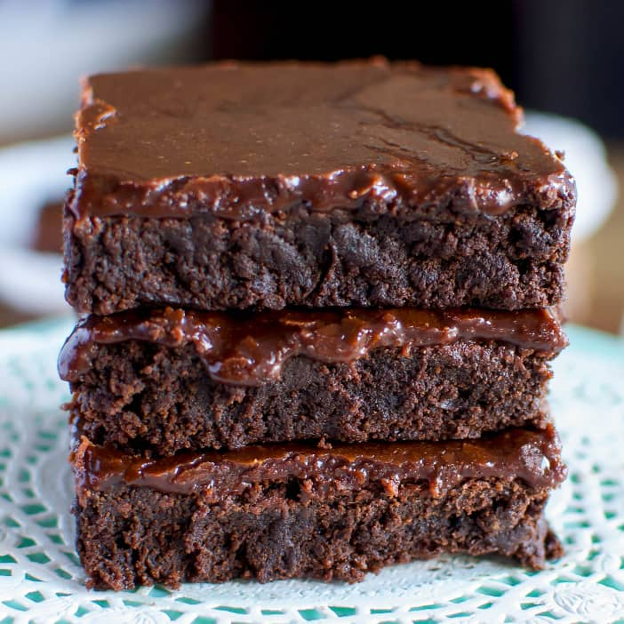

Vegan Brownies

These vegan brownies are made with cocoa powder for a rich and gooey chocolaty treat.
Ingredients
- 2 cups all-purpose flour
- 2 cups granulated white sugar
- 3/4 cup unsweetened cocoa powder
- 1 tsp baking powder
- 3/4 tsp salt
- 1 cup hot water or coffee
- 1/2 cup vegetable oil
- 2 tsp vanilla extract
Steps
- Preheat the oven to 350 degrees F (175 degrees C). Grease a 9x13-inch baking dish with baking spray; line bottom with parchment paper.
- Whisk flour, sugar, cocoa powder, baking powder, and salt together in a large bowl until combined.
- Pour in water (or coffee), vegetable oil, and vanilla; mix until well-blended. Spread batter evenly in the prepared dish.
- Bake in the preheated oven until top is no longer shiny and center feels just set when gently pressed, about 30 minutes. Let cool for at least 10 minutes before cutting into 15 squares.
Home